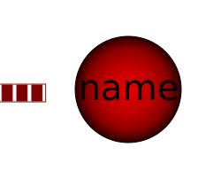

This base class extends PartialLumpedVolume with a vector of fluid ports and a replaceable wall HeatTransfer model.
The following modeling assumption are made:
fluidlevel <
portsData_height[i] and ports[i].p <
vessel_ps_static[i] mass flow at the port is set to 0.Each port has a (hydraulic) diameter and a height above the
bottom of the vessel, which can be configured using the
portsData record. Alternatively the
impact of port geometries can be neglected with
use_portsData=false. This might be useful for early
design studies. Note that this means to assume an infinite port
diameter at the bottom of the vessel. Pressure drops and heights of
the ports as well as kinetic and potential energy fluid entering or
leaving the vessel are neglected then.
The following variables need to be defined by an extending model:
input fluidVolume, the volume of the fluid in the
vessel,vessel_ps_static[nPorts], the static pressures
inside the vessel at the height of the corresponding ports, at zero
flow velocity, andWb_flow, work term of the energy balance, e.g.,
p*der(V) if the volume is not constant or stirrer power.An extending model should define:
parameter vesselArea (default:
Modelica.Constants.inf m2), the area of the vessel, to be related
to cross flow areas of the ports for the consideration of dynamic
pressure effects.Optionally the fluid level may vary in the vessel, which effects
the flow through the ports at configurable
portsData_height[nPorts]. This is why an extending
model with varying fluid level needs to define:
input fluidLevel (default: 0m), the level the
fluid in the vessel, andparameter fluidLevel_max (default: 1m), the
maximum level that must not be exceeded. Ports at or above
fluidLevel_max can only receive inflow.An extending model should not access the portsData
record defined in the configuration dialog, as an access to
portsData may fail for
use_portsData=false or nPorts=0.
Instead the predefined variables
portsData_diameter[nPorts],portsData_height[nPorts],portsData_zeta_in[nPorts], andportsData_zeta_out[nPorts]should be used if these values are needed.
| Name | Description |
|---|---|
|  HeatTransfer |